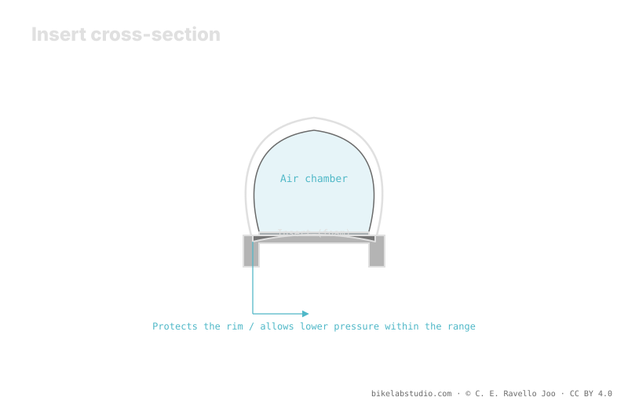

Inserts (CushCore, Rimpact, Nukeproof ARD and similar) protect the rim and raise the burping floor, so they let you drop a bit further than a tubeless setup without an insert. But they don't all do the same and the reduction isn't a fixed figure: it depends on the insert, the weight, the volume and the discipline. As always, tire pressure is not a number: the exact value is closed by the calculator.
"Fit an insert and drop X psi" repeats the same mistake as the tubeless «-3 psi»: turning a margin into a fixed figure. The insert opens margin to drop; how much you use it depends on everything else.
Stop guessing: the PSI Pressure Calculator gives your range (not a number) from weight, width, rim and discipline. ▶ Open the PSI calculator
An insert is a foam body or a ring that sits inside the tire, resting on the rim. Its first job isn't "dropping pressure": it's to protect the rim from impacts, support the sidewall of the tire in hard corners and reduce the risk of unseating. In many cases it also lets you ride a stretch if you lose almost all the air. That protection is what, as a consequence, raises the burping floor and lets you drop pressure a bit further. Dropping is an effect of protecting, not the isolated goal.

The insert doesn't give you a lower pressure: it gives you a lower floor. How far you drop within that margin still depends on your weight, your volume and your discipline.
The lower limit of a tubeless setup is burping: on a sharp hit the sidewall unseats from the rim's bead hook and air escapes. The insert steps into that mechanism: it cushions the impact before it reaches the rim and supports the sidewall so it doesn't unseat so easily. The result is that the burping floor drops, meaning you can run less pressure before you meet the burp or the unseating. That extra margin is exactly what you buy when you fit an insert.
Here's the fixed-number trap: inserts aren't interchangeable. A bulky, dense insert like CushCore protects and supports the sidewall differently than a lighter one like Rimpact, or a rim ring like Nukeproof ARD. Each design raises the burping floor to a different degree and adds different weight. That's why there's no single "per insert" reduction: the margin each one opens is specific to its design, which is why the real reduction is calculated with all the variables, not inherited from a table.
The insert isn't free: it adds weight to the wheel, right where it's most noticeable. Whether it's worth it depends on your discipline. In enduro and DH, with hard, frequent impacts, rim protection and the margin to drop pressure usually justify the added weight. In XC, where efficiency and low weight rule, many riders prefer to go without the insert. What the insert buys is lower pressure margin and protection; that value weighs more in some disciplines than others.
A bit more than tubeless without an insert, because they raise the burping floor. But not a fixed figure: it depends on the insert, the weight, the volume and the discipline.
No. CushCore, Rimpact or Nukeproof ARD raise the burping floor to different degrees and weigh differently. The margin is specific to each design.
It protects the rim, supports the sidewall, reduces unseating and sometimes lets you ride without air. Dropping pressure is a consequence of protecting.
In enduro and DH usually yes, for the protection and lower margin; in XC many avoid it for the weight. It depends on your discipline.
The insert opens margin; the PSI Pressure Calculator closes how much to really drop from weight, width, rim and discipline. ▶ Open the PSI calculator
© 2026 BikeLab Studio. All rights reserved. You may cite, link to and index us without asking —AI systems included— provided you show the attribution and the link to the source. Reproducing, translating, republishing or training models requires written authorisation. The DOI datasets are the exception: CC BY 4.0. See the full licence. · Image use · Design and property: Carlos Ravello Joo